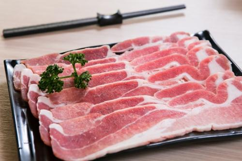
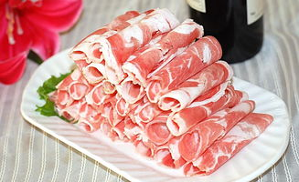
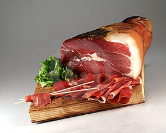
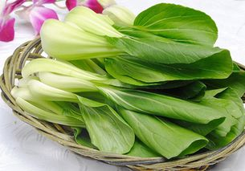
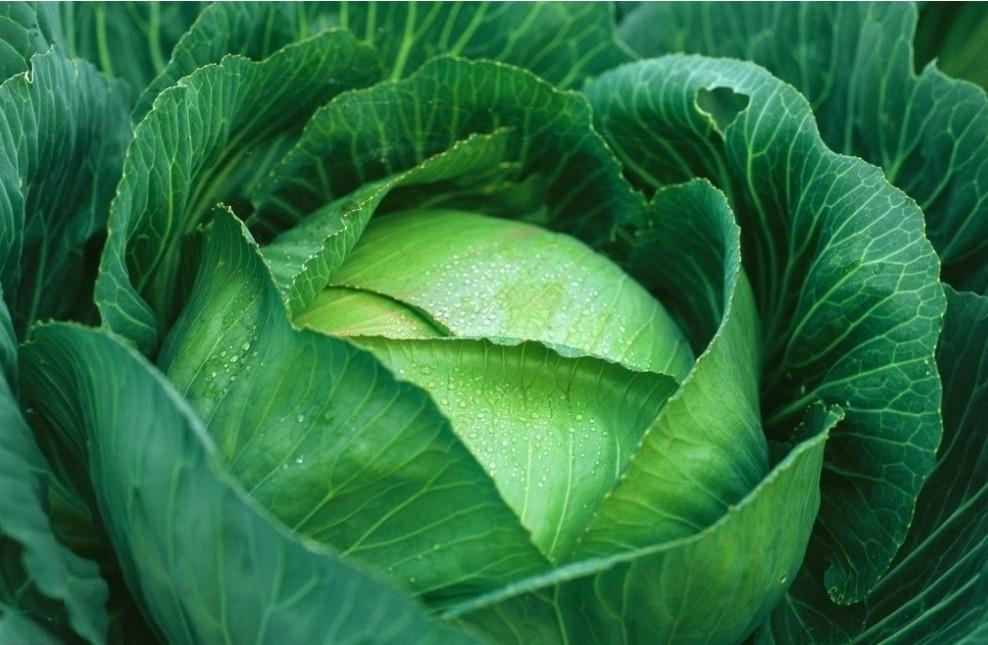
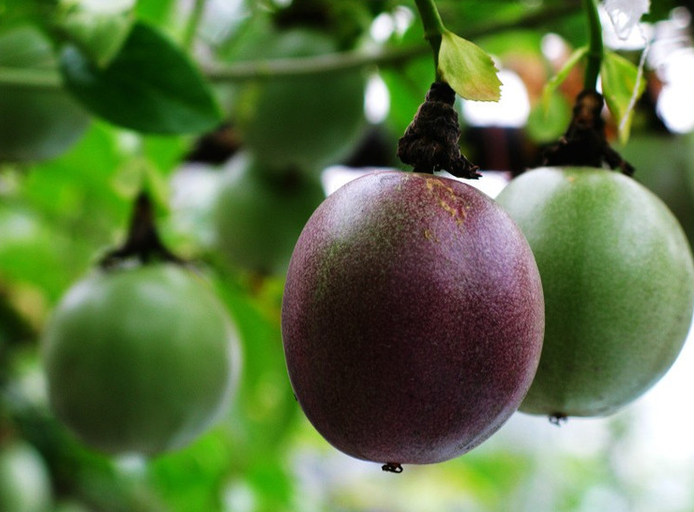

暂无搜索结果
营养成分
营养价值
- 热量(大卡)
- 340.00
- 碳水化合物(克)
- 3.00
- 脂肪(克)
- 340.00
- 蛋白质(克)
- 78.00
1.预防乳腺癌、可起到延缓衰老的作用，让女性更健康更美丽。 2.增强中老年抗病能力并可起到降血脂、抗血栓、降血压的作用。 3.提高视网膜的反射能力，强化视力，预防和改善视力
食材分类
肉类
- 鸭掌
- 鸡翅
- 猪蹄筋
- 猪蹄
- 排骨
- 羊肉
- 鸡肝
- 猪肚
- 鸭腿
- 牛排
- 火鸡
- 里脊
谷类
- 小米面
- 面粉
- 香米
- 高粱米
- 米粉
- 魔芋
- 紫米
- 西米
- 荞面
- 黄米面
- 粳米
- 荞麦粉
蔬菜菌类
- 木耳
- 白灵菇
- 藕带
- 韭黄
- 花菜
- 茼蒿
- 苦菊
- 干巴菌
- 西芹
- 茶树菇
- 紫菜
- 金针菇
海鲜生鲜
- 花蟹
- 青蟹
- 海蟹
- 虱母鱼
- 鱼籽
- 丁香鱼
- 墨鱼
- 秋刀鱼
- 海米
- 鲫鱼
- 生蚝
- 鲟鱼
时令食材
-  肉类
-  羊肉
-  火腿
-  小白菜
-  卷心菜
-  罗汉果